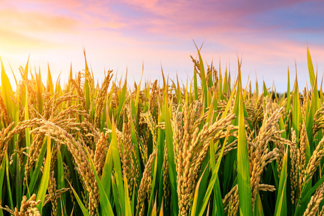

Rice (चावल)
Harvesting
Machine & Manual
Fertilization
NPK @ 60:20:24 Kg/Acre

- Rice is one of the world’s most important staple foods, feeding more than half of the global population. It belongs to the grass family (Poaceae) with the main cultivated species being Oryza sativa (Asian rice) and Oryza glaberrima (African rice). Rice is primarily consumed as a cereal grain, but its by-products such as rice bran, husk, and straw are also widely used for oil extraction, animal feed, and fuel. Its significance lies not only in daily nutrition but also in its cultural and economic importance, especially in Asia.
- Rice requires a warm and humid climate for proper growth. The ideal temperature range is 20°C to 37°C depending on the growth stage, with around 25°C–30°C being most suitable. It thrives in areas that receive 100–200 cm of annual rainfall, making monsoon climates highly favorable. Since rice is highly sensitive to frost and low temperatures, it is best grown in tropical and subtropical regions. High humidity during the growing season ensures healthy plant growth and grain filling.
- Rice is a water-intensive crop, often grown in flooded paddy fields. On average, it requires 1,200–1,500 mm of water during its entire life cycle. Standing water of 5–10 cm is typically maintained in fields to suppress weeds and support growth. Irrigation plays a crucial role in areas with insufficient rainfall. Continuous water availability during the vegetative and reproductive stages is critical, as water stress can drastically reduce yield. However, modern methods like System of Rice Intensification (SRI) aim to reduce water use while maintaining productivity.
- Rice can be grown in three main seasons in India and other South Asian countries: Kharif (June–November), Rabi (November–April), and Summer/Zaid (March–June). The Kharif season is the most common, where rice is sown with the onset of monsoon rains in June–July and harvested between October and November. In irrigated areas, rice can also be cultivated during the Rabi season, sown in November and harvested in March–April. In southern and coastal regions, rice is even grown three times a year due to favorable climate and water availability.
- Nutritionally, rice provides about 130 calories per 100 g of cooked grains, with high carbohydrate content for quick energy. Brown rice contains more fiber, vitamins, and minerals than polished white rice, making it a healthier alternative. Economically, rice is the backbone of many countries’ agricultural economy, providing livelihood to millions of farmers. Nations like China, India, Indonesia, Bangladesh, Vietnam, and Thailand are among the leading producers. Its global demand continues to grow, making rice not just a food grain but a vital crop for ensuring food security worldwide.